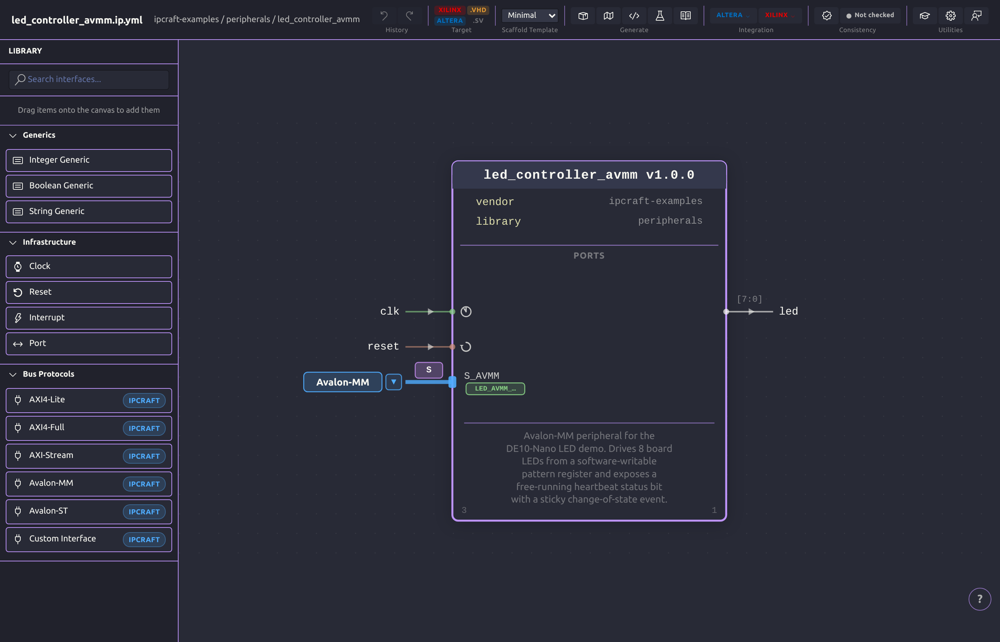

Describe
Model ports, interfaces, address blocks, registers, and fields in focused visual editors backed by reviewable YAML.
Design IP cores and register maps visually, keep readable YAML as the source of truth, then generate and build production-ready RTL without leaving VS Code.

IPCraft connects specification, implementation, and vendor tooling. A structural change propagates to generated HDL, testbenches, documentation, and build projects.
Model ports, interfaces, address blocks, registers, and fields in focused visual editors backed by reviewable YAML.
Scaffold VHDL or SystemVerilog, bus wrappers, register files, cocotb tests, docs, and vendor project files.
Check HDL consistency, inspect captured data, run simulation, and launch headless Vivado or Quartus builds from VS Code.
IPCraft provides separate editors for topology, register layout, and captured data, all backed by the same specification.
Place clocks, resets, ports, bus interfaces, and generics while the inspector keeps every property close at hand.
Explore the IP Core editor →Edit blocks, registers, and bit fields in keyboard-friendly tables with a visual bit layout that stays synchronized with YAML.
Learn memory-mapped registers →Map CSV captures and literals onto register definitions, then decode, combine, and inspect values in a visual workspace.
Explore the Data Inspector →Place clocks, resets, ports, bus interfaces, and generics while the inspector keeps every property close at hand.
Edit blocks, registers, and bit fields in keyboard-friendly tables with a visual bit layout that stays synchronized with YAML.
Map CSV captures and literals onto register definitions, then decode, combine, and inspect values in a visual workspace.
IPCraft automates the repetitive work between formats and tools, so you can focus on design decisions.
Generate complete RTL projects with bus wrappers, constraints, packaging metadata, testbenches, and scripts for your chosen toolchain.
Cross-check the specification, top-level HDL, and vendor artifacts to catch inconsistencies before integration.
Read the consistency check guide →Decode literals and captured CSV data against real register definitions, then transform signals visually.
Read the Data Inspector guide →Reverse-engineer VHDL entities, Platform Designer components, and Vivado IP-XACT metadata into an IPCraft specification instead of beginning from a blank file.
Generation is not locked to IPCraft's built-in HDL templates. A scaffold pack is a plain directory of Nunjucks templates, referenced from the IP Core spec, that overrides any built-in template by file name — replace one file or the entire set.
Keep compact, versionable YAML at the center while visual edits preserve comments and numeric formatting.
Install IPCraft, create an IP Core with a register map, and generate a working project from your first interface.